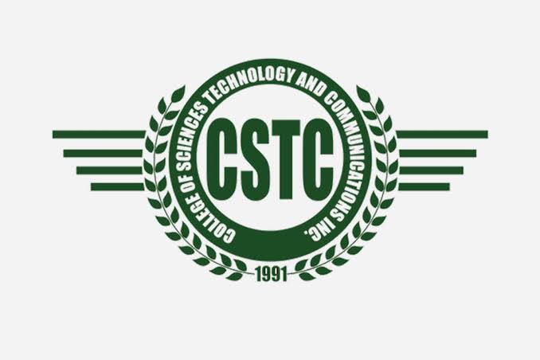

Information Technology Student
Motivated IT student with a passion for technology and programming. Eager to learn new skills and build practical solutions. Committed to growing as a developer while creating useful applications.

2025 — Present
2023 — 2025
To become a professional developer and create useful applications that can help others. I believe in continuous learning. "Learn something new every day."